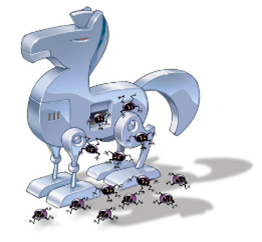
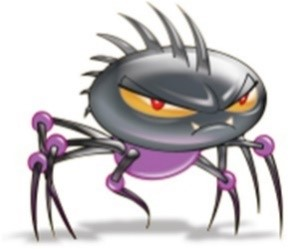

Ian araújo rocha, 16/08/2026
O que é um Cavalo de Troia? Batizado com base na história do cavalo de madeira usado para convencer os defensores de Troia a trazer soldados sorrateiramente para a cidade, um Cavalo de Troia oculta um malware em um arquivo aparentemente normal. Há uma grande variedade de vírus Cavalo de Troia online, que podem executar inúmeras tarefas. A maioria dos Cavalos de Troia tem como objetivo controlar o computador de um usuário, roubando dados e inserindo outro malware no computador de suas vítimas.

Malware é um termo genérico para qualquer tipo de software malicioso projetado para prejudicar ou explorar qualquer dispositivo, serviço ou rede programável. Os criminosos cibernéticos costumam usá-lo para extrair dados que podem ser utilizados das vítimas para obter ganhos financeiros. Eles vão de dados financeiros, registros médicos a e-mails e senhas pessoais - as possibilidades de que tipo de informação pode ser comprometida se tornaram infinitas.

vírus de computador é um tipo de programa ou código malicioso criado
para alterar a forma como um computador funciona e desenvolvido para se
propagar de um computador para outro. Um vírus atua se inserindo ou se
anexando a um programa ou documento, a fim de executar o seu código.
Durante esse processo,um vírus pode potencialmente causar efeitos
inesperados ou prejudiciais, como danificar o software do sistema,
corrompendo ou destruindo os dados e, em muitos casos modernos, roubar
informações, criptografar arquivos ou permitir acesso remoto ao dispositivo.